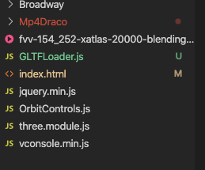

H5 插件使用教程
SDK简介
本部分教程的作用是介绍在H5开发环境下，使用PromethH5SDK（以下简称SDK）制作运行在浏览器上的H5页面。
SDK主要提供：容积视频解码,三维物体渲染,GLTF三维模型加载,屏幕交互支持等功能。

图1.1 SDK plugin目录结构
* Broadway、Mp4Draco包含的是容积视频解码相关的功能.
* OrbitControls.js包含屏幕交互支持功能.
* three.module.js包含渲染三维内容功能.
* GLTFLoader.js包含加载三维模型功能.
开发注意事项
三维模型的渲染
- 初始化three.js的渲染参数,尤其注意场景相机与三维模型的position设置以及三维模型的scale设置.
SDK接入快速入门
导入SDK
准备渲染三维物体
import * as THREE from "./three.module.js"
引用three.js
scene = new THREE.Scene
var ambientLight = new THREE.AmbientLight(0xffffff,1)
scene.add(ambientLight)
初始化three.js
解码容积视频
<script src="Broadway/mp4.js"></script>
<script src="Broadway/Decoder.js"></script>
<script src="Broadway/YUVCanvas.js"></script>
<script src="Broadway/Player.js"></script>
<script src="Broadway/stream.js"></script>
引用Broadway
import { MeshQueue, Mp4MeshLoader } from './Mp4Draco/Mp4MeshLoader.js'
引用Mp4Draco
g_meshQueue = new MeshQueue()
g_meshQueue.load(url, function () {
scene.add(g_meshQueue.root)
}, onProgress, onError)
解码ur
设置交互支持
import { OrbitControls } from './OrbitControls.js'
引用OrbitControls.js
controls = new OrbitControls(camera, renderer.domElement)
初始化OrbitControls.js
渲染
renderer.render(scene, camera)
controls.update()// only required if controls.enableDamping = true, or if controls.autoRotate = true
每帧渲染
加载其他三维模型(可选)
import { GLTFLoader } from "./GLTFLoader.js"
引用GLTFLoader.js
var gltf = new GLTFLoader()
gltf.load('https://prometh-test.oss-cn-shenzhen.aliyuncs.com/dev/2019/ClothesDemo/SceneModel/scene.gltf',function (gltf) {
scene.add(gltf.scene)
},
null,onError)
初始化GLTFLoader.js